A comforting dish from Bavaria, Austria, and Switzerland that brings rich flavors and a connection to tradition.
Kässpatzen, or “cheese spaetzle,” is a traditional comfort dish enjoyed in Bavaria, Germany, Austria, and Switzerland. This dish layers soft, homemade pasta (spaetzle) with melted Emmentaler (or similar) cheese, topped with crispy onions.
Making spaetzle from scratch is simple and requires just a few basic ingredients: flour, eggs, milk, and salt. The batter is mixed until smooth and slightly stretchy, then pressed through a Spätzlehobel—a traditional spaetzle maker that resembles a grater—directly into a pot of boiling salted water. As the small dumpling-like noodles cook, they rise to the surface, signaling that they are ready to be scooped out. Once drained, the spaetzle can be tossed in butter for extra flavor before being layered with cheese to make Kässpatzen. If you do not have a Spätzlehobel, a colander with large holes or a potato ricer can be used as an alternative.
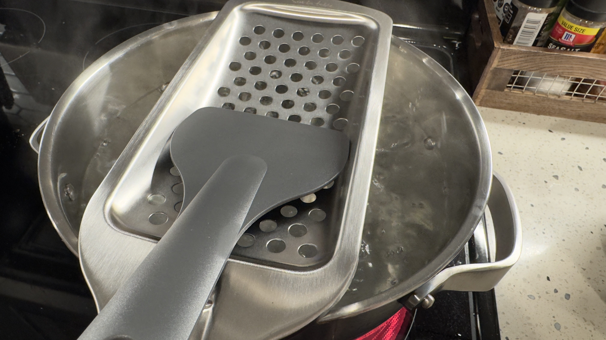Mix the flour, eggs, milk, and salt into a smooth batter.
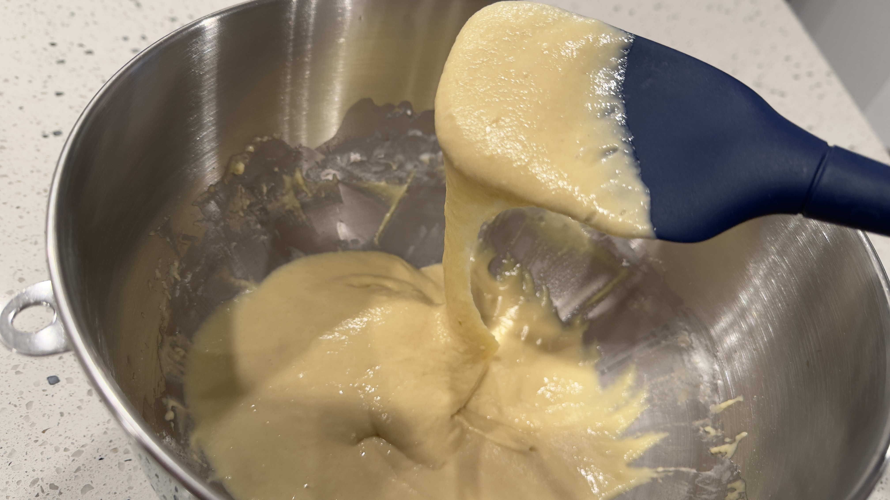Bring salted water to a boil and press the batter through a spaetzle maker into the boiling water.
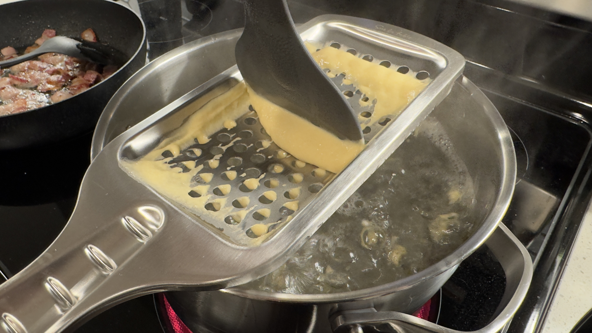Remove the cooked spaetzle noodles and drain in a colander
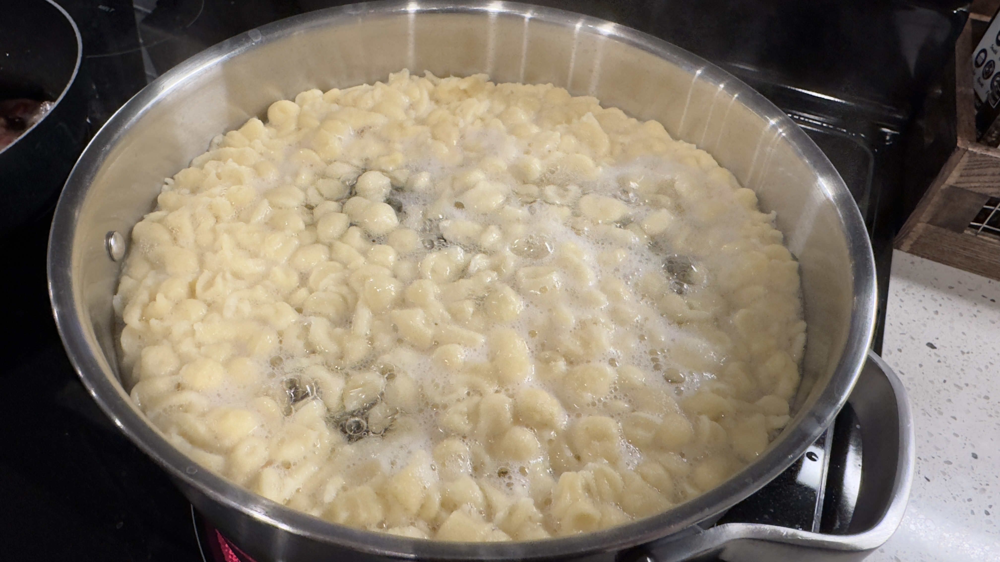 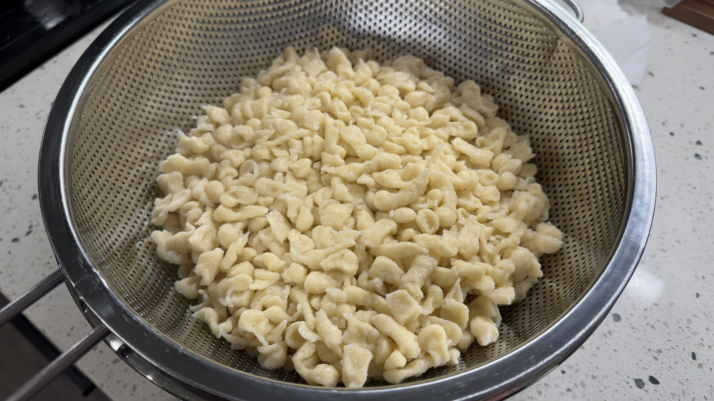In an oven-safe dish or pan, toss the spaetzle noodles with butter and black pepper
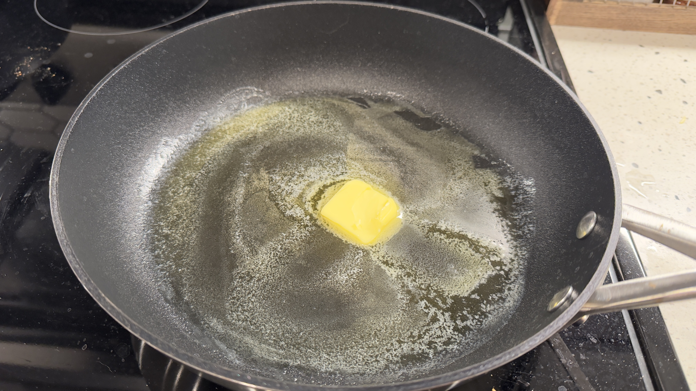 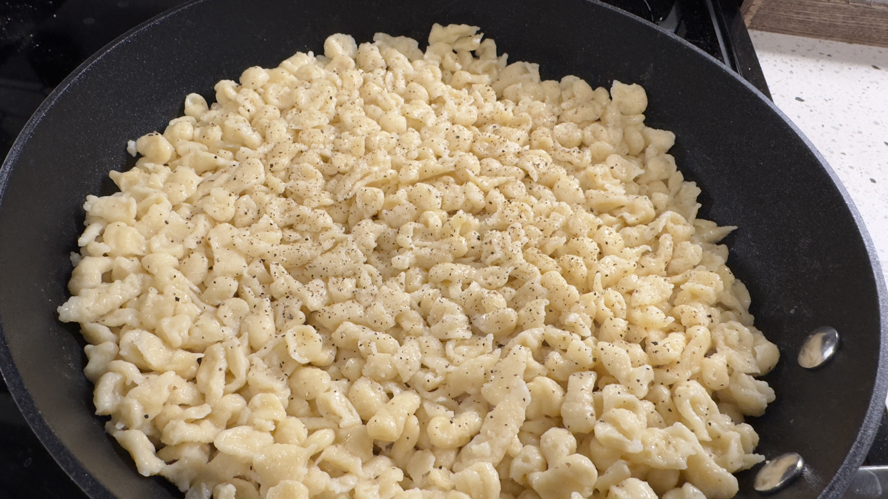Grate the cheese and add to the spaetzle noodles on top or layered throughout the noodles
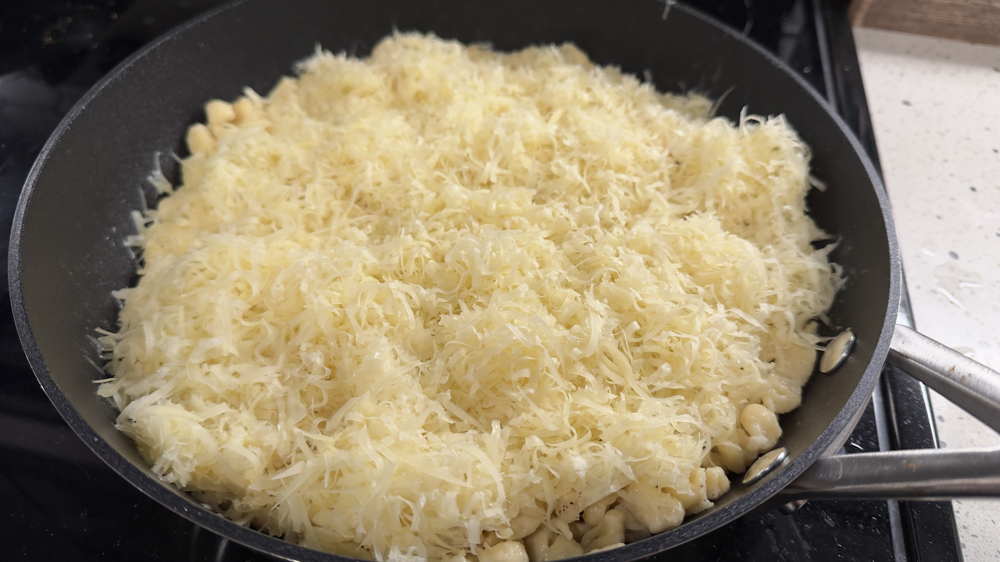Bake at 350°F (175°C) for around 10 - 15 minutes or until the cheese is melted
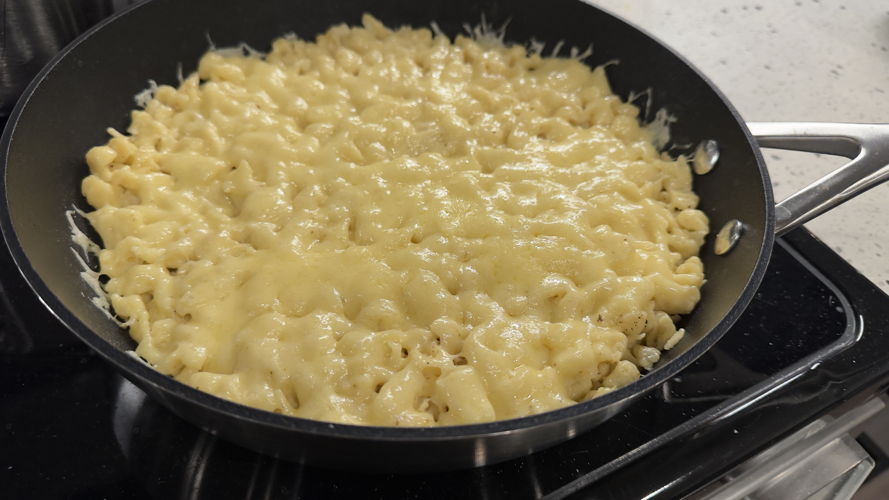Sauté the onions in butter until light golden (or cripsy for extra flavor!)
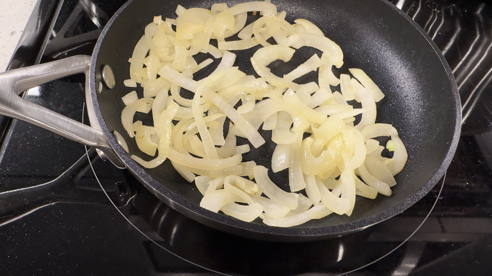Top with crispy onions and fresh herbs. Serve warm!
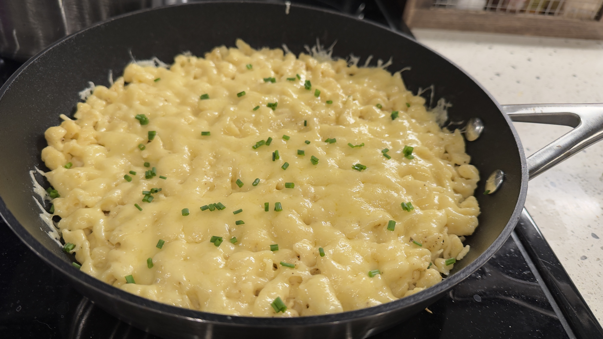 ✨ Pro Tip: Top with crispy bacon bits for extra flavor!For any questions about this recipe, or this university assignment, feel free to reach out: david.williamson1@csuglobal.edu